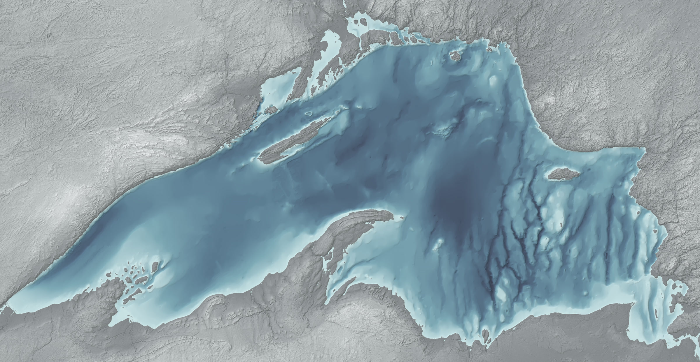

The season: lake ice against 2008 to 2025, and each region's ice
What is sounding
The picture is the lake for the day being played, rendered in Blender: the day's ice over the lake floor, lit from the northwest like a relief map and brighter as the noon sun climbs (D), with open water coloured by depth. The amount of ice in each cell is observed; the floe pattern inside a cell is drawn, not observed (S). It shows where the ice is, not water temperature. Compare with the data draws a line you can drag: left of it is the data as measured, 2.8 km cells coloured by surface water temperature with ice in white. Each region brightens softly as its ice voice sounds. When a region freezes fast, a pale ring spreads from it and you hear a brief glass ping; when ice breaks up, a warm ring spreads and you hear a low drop. The overlay buttons under the picture add names, wind (arrows), snow and rain (flecks), symbolic birds (violet marks) and the region outlines.
The heat strip under the map is the whole season at once: one row per region, west at the top, coloured by ice. The dots are the freeze and breakup events that trigger the pings and drops. Click it to move through the season.
Tap or hover a region, on the map or in the list, to see its own year of ice and water temperature; tap it again to let go.
| Layer | Data | Sound |
|---|
What this cannot tell you. The regions are wedges cut by distance from eight anchor points, not lake basins or depth zones. Stereo position follows longitude (blended with rank so the three regions near 88° W are apart), so north and south at the same longitude sit in the same place in the stereo image; the map carries that difference. Freeze and breakup events are derived: a three-day smoothed change in a region's ice of four percentage points or more in a day, with at least three days between events. The 4 °C turnover marker uses lake-mean satellite skin temperature as a proxy; it is not a measurement of the lake overturning. Air temperature, wind, precipitation, snow and sunshine are ERA5 reanalysis at one point per region, not station observations. Water temperature is the satellite skin temperature of the top millimetres, not the lake at depth: under the ice, most of Superior sits near 4 °C all winter. It is used because it is the only daily, lake-wide, gridded water-temperature record, and it is the surface that freezes; sounding the water column would need a lake model such as NOAA's Great Lakes Coastal Forecasting System. Birds are symbolic (S): each region's loon and geese arrive on a date the data suggest, and the calls are recordings, not observations of migration.
Places and territory. This piece sonifies one winter on Gichigami, Lake Superior, in the territory of the Anishinaabe, including Ojibwe nations with treaty rights there: the Robinson-Superior Treaty of 1850 in Ontario, and the treaties of 1836, 1842 and 1854 in Michigan, Wisconsin and Minnesota. I am not from that place; I work from data, at a distance. I respect the people of the lake and the treaties that protect their rights, and I hold this acknowledgement as a draft, open to correction by those it concerns.

Sources. Ice and water data courtesy of NOAA: the Great Lakes Environmental Research Laboratory (GLERL) and the CoastWatch Great Lakes Node. Ice concentration: NOAA GLERL and CoastWatch Great Lakes Node, GLSEA analysis using NIC ice charts (public data), daily, block-averaged from about 1.4 km to 2.8 km cells. Surface water temperature: NOAA CoastWatch ACSPO GLSEA satellite analysis; gaps under cloud are filled by the analysis. Lake-average ice, 2008 to 2025: NOAA GLERL. Air temperature, wind, precipitation, snowfall and shortwave radiation: ERA5 reanalysis (Copernicus Climate Change Service, CC BY 4.0) via the Open-Meteo historical weather API. Day length is calculated at 47.6° N. Loon and Canada goose recordings: Jonathon Jongsma, CC BY-SA 3.0, through Wikimedia Commons. Orchestral samples: VSCO 2 Community Edition (CC0). The day pictures are rendered from the same ice data over NOAA NCEI Great Lakes Bathymetry (National Geophysical Data Center, 1999; NOAA public data, not for navigation) with Blender 5.2 (EEVEE); code: blender_superior_ice.py; images CC BY 4.0. The regions, events and sound mapping are described in the project's spec.
Versions. 1.1 (29 September 2026) changes the picture only, not the music: the map becomes one Blender render per day, cross-faded, with the data as measured behind a line you drag, overlays you turn on and off, a depth legend, and a seek bar that runs through the coda. 1.0 (29 September 2026) is the main track, with each choice picked by ear on an A/B bench: the ghost of the median year with a symbolic coda after the last day of data; a hum for the deep water that sits near 4 °C under the ice; freeze and breakup sounds placed at a distance (quieter, darker, a little later and wetter the farther away), spread in time so no more than four fall on one day; and eastern (higher) regions trimmed 0.5 dB a step so the east doesn't sound louder. 1.0 also fixes a 0.2 bug: the ghost's pitch was summed at too low a precision, so it stepped between wrong notes and, for most of the piece, played about two and a half semitones sharp (in the longer render it fell silent after about six minutes). 0.2 (28 September), after a first listen: fewer bird calls, each at its own distance; quieter, wetter events; a softer ghost. The shorter 0.2 render stays for a quicker listen. 0.1 was the first render.